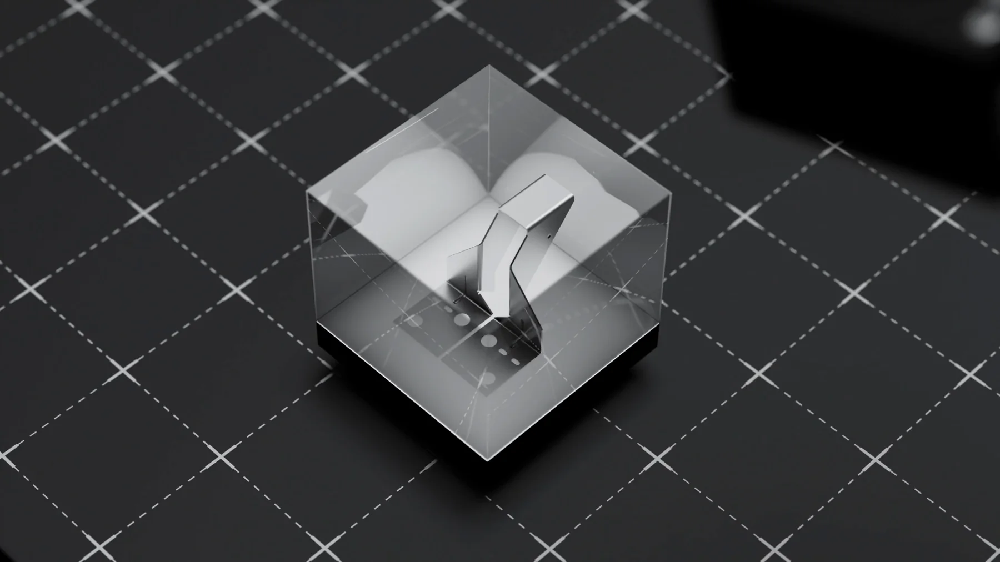
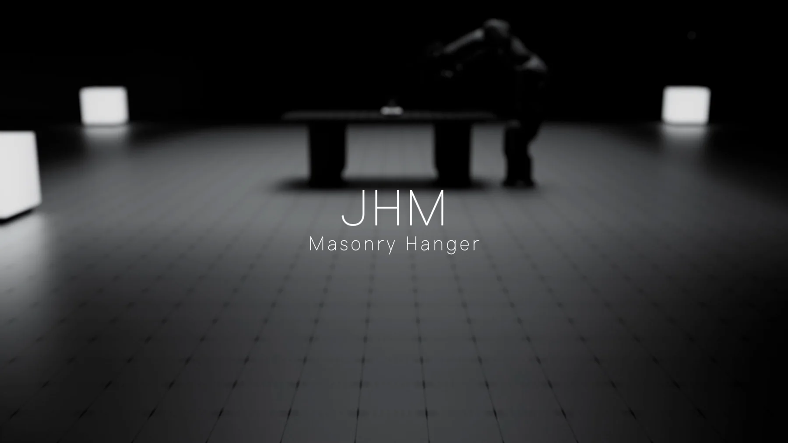
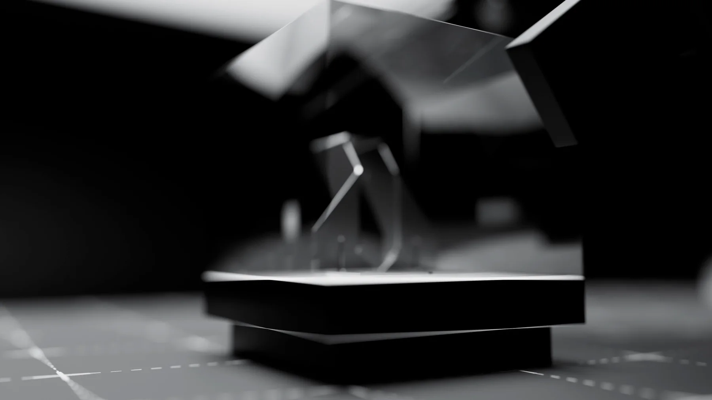
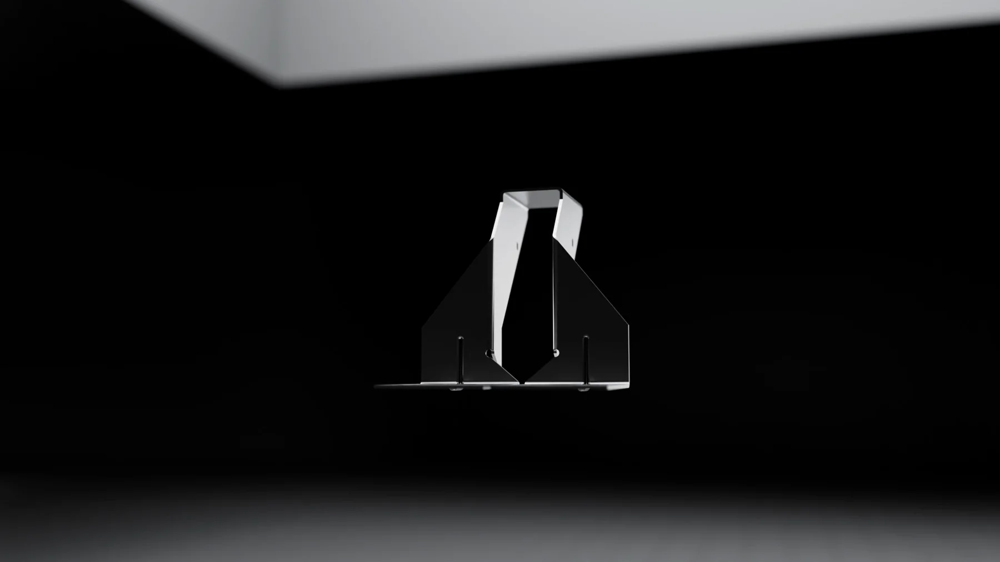
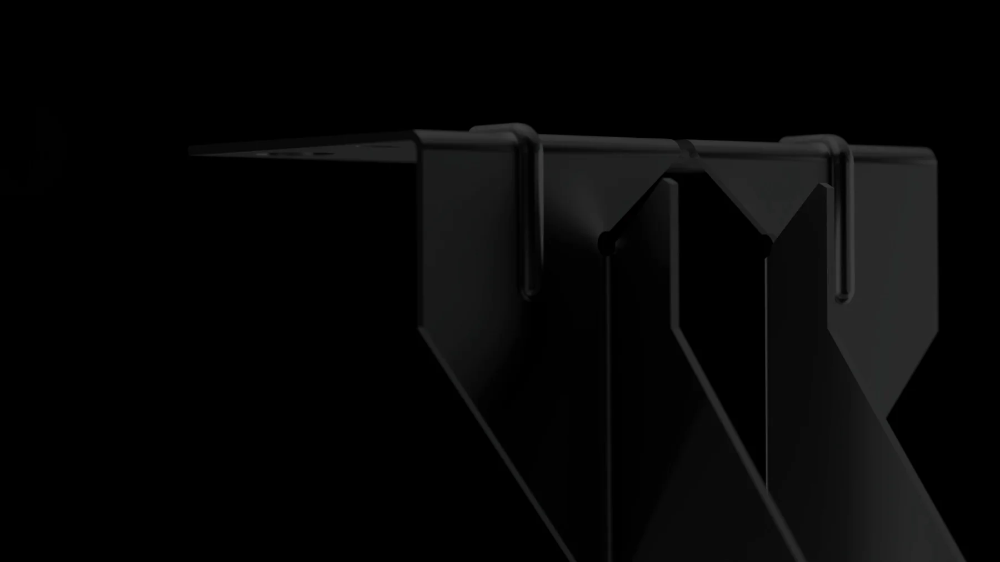
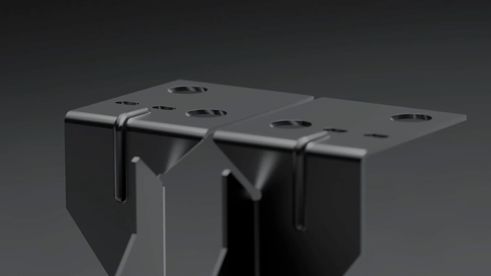
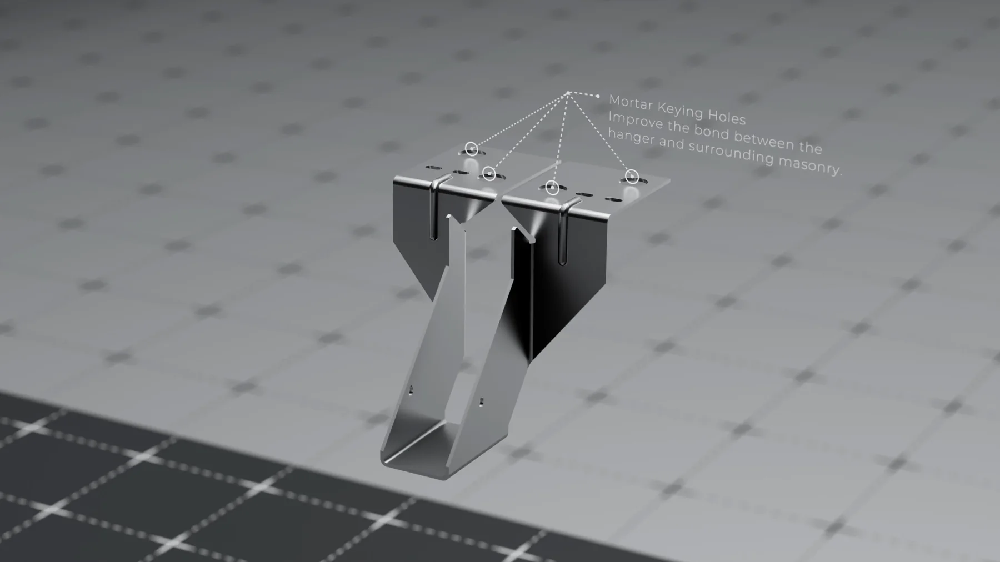
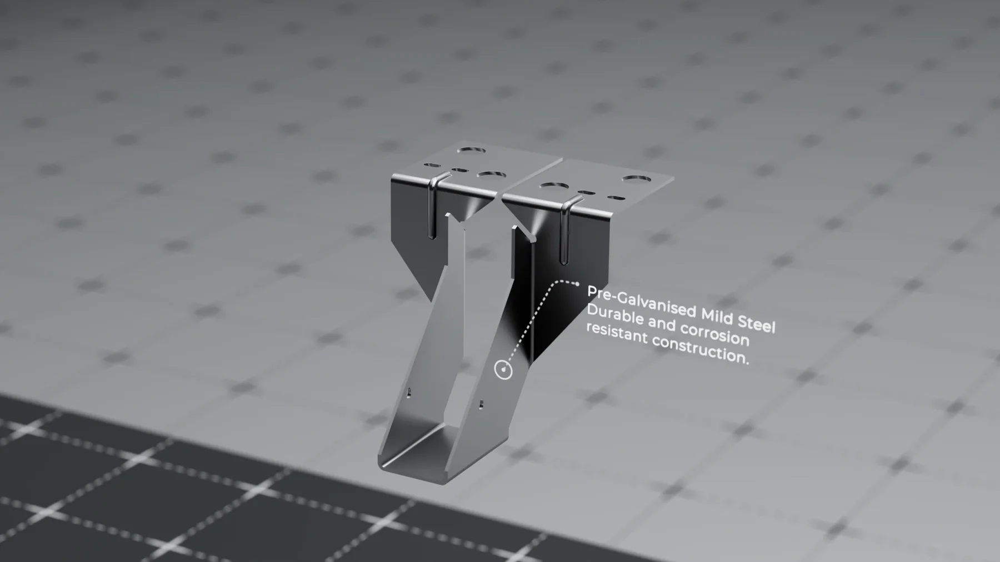

Dự án · Simpson Strong-Tie · bài dự tuyển 3D Artist · 2026
JHM Masonry Hanger — TVC kỹ thuật
JHM Masonry Hanger là móc treo thép dùng trong xây dựng — một chi tiết kim loại nhỏ, không màu mè, mà vẫn phải làm cho ra được cảm giác chắc chắn và chính xác. Đề bài: một TVC kỹ thuật dưới một phút, đủ để người kỹ sư nhìn hiểu sản phẩm làm bằng gì và lắp ra sao.
Bài toán
Ba thứ khó nhất
Sản phẩm không có gì để khoe
Một miếng thép gập. Không màu, không đèn, không chuyển động. Toàn bộ sức hấp dẫn phải đến từ ánh sáng, góc máy và nhịp dựng — chứ bản thân vật thể không tự gánh được khung hình.
Thép mạ kẽm rất khó render
Bề mặt vừa phản chiếu vừa nhám, lại xám hoàn toàn. Làm bóng quá thì thành inox, làm mờ quá thì thành nhựa. Phải tìm đúng khoảng giữa, và giữ nguyên khoảng đó qua mọi cảnh.
Vừa phải đẹp vừa phải đúng kỹ thuật
Khách là hãng vật tư xây dựng, người xem là kỹ sư. Lỗ bắt vít, độ dày tôn, vị trí gân tăng cứng đều phải khớp bản vẽ — không được làm đẹp bằng cách sửa hình dáng sản phẩm.
Hình ảnh
Từng cảnh, và lý do







Cách làm
Năm bước
Từ file CAD sang lưới render được
Khách cấp file STEP và OBJ. CAD cho đúng kích thước nhưng lưới tam giác vụn, bo cạnh vỡ — phải dựng lại phần vỏ để bevel bắt sáng sạch.
Chốt vật liệu trước khi dựng cảnh
Làm riêng một file thử vật liệu, so nhiều mức nhám cạnh nhau dưới cùng một đèn. Chốt xong mới mang sang các cảnh — để thép trông giống nhau từ đầu tới cuối.
Dựng sân khấu dùng chung
Một sân khấu tối với sàn lưới và hai khối đèn, dùng lại cho mọi cảnh. Nhờ vậy các shot cắt vào nhau không bị lệch tông, và đỡ phải dựng sáng lại từ đầu.
Chú thích dựng trong 3D
Chữ và đường chỉ là vật thể thật trong cảnh, gắn vào điểm trên sản phẩm. Camera chạy thì chú thích chạy theo đúng phối cảnh — dán ở hậu kỳ sẽ trôi.
Dựng phim và âm thanh
Ghép theo nhịp: mở chậm, giữa nhanh, kết chậm lại. Hiệu ứng âm thanh cánh tay robot và tiếng giao diện kỹ thuật đặt đúng khung hình để cú cắt có trọng lượng.
Muốn làm được shot như thế này?
Đây là đúng những kỹ năng trong lộ trình LXAM Academy — dựng hình, ánh sáng, render tách lớp, dựng phim. Học bằng dự án thật, có người sửa bài.